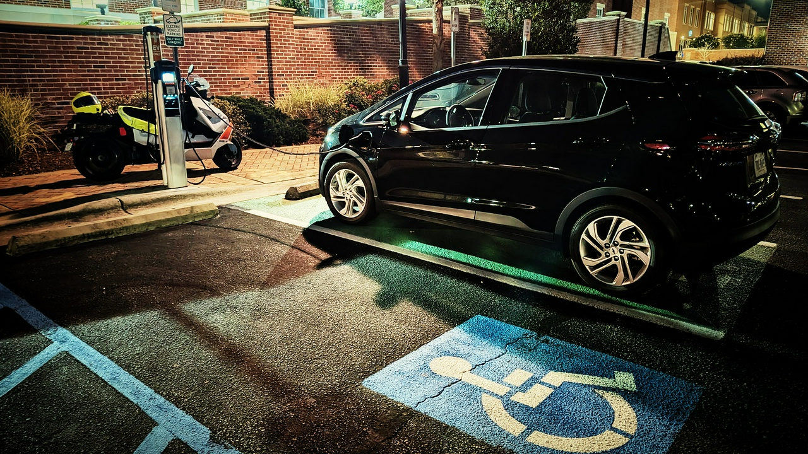

Piggly Wiggly saves the Electric Coastal Raid
The birthrights of humankind are that of unexplored limits and undiscovered territories. The aim of my trip last weekend was to find a bit of both.
In the USA, my steed is exotic and likely unfamiliar to most readers: the BMW CE-04. It's an electric scooter with an 8.5 kWh battery, good for about 60 miles of range on country roads. It'll comfortably hit 80 mph – but not without a severe impact on its range. This beemer is a true city slicker and, like the Ivory Billed Woodpecker, is rarely found in the South-Eastern United States.
My goal is simple: learn how far this scoot can reasonably travel in a day. The nearest beach is a 333-mile round-trip avoiding highways, so I figure that should be a good benchmark to use. This was my plan:
Did I mention that this bike requires an hour of charging for every hour of riding you put in?
The Crack of Fucking Dawn
I scarf down a bowl of yogurt with some granola and head out to the gravel driveway to hop on my electric steed. Somehow, I've made it this far, and it's only 5:01 am. I'm so excited about this ride that coffee doesn't even cross my mind.
I turn on the ignition, and the BMW CE-04 roars to life, or not.. as there are absolutely no moving parts to engage until you pull on the throttle of this electric-motor belt-driven battery-laden spaceship. The BMW Navigation software cheerily announces that I should arrive by 8:45 am, but sadly, it is unaware of the need to make charging stops.
This is the earliest I've left my house for anything but a group bicycle ride, and the cool weather feels nice against my vented jacket, gloves, and boots. As I wait for a traffic light on the campus of UNC-Chapel Hill (America's Oldest Public University), I see a Gray Fox playfully dancing up and down the street, likely attempting to catch a small rodent that I'm unable to see in the pitch fucking black.
The first 15 miles of this ride travel through suburban areas (Chapel Hill, Cary, Morrisville, Apex) should know quite well, having lived among them for about 8 years. Winding through the ethereal darkness at 5 am, nothing seems familiar.
Daylight breaks as I cross through Holly Springs, seeing a dot on my map that must mean a charging stop, but I realize I'm saving it for the way back. Instead, we're heading a few miles more to Fuquay Varina. I always assumed this town had a corrupt Native American name, but it resulted from a merger of two towns in the 1960s named after two different immigrants: Fuquay and Varina.
I like to explore new charging spots when I can, so I first try a charger at City Hall, but it's apparently blocked by a big red gate outside office hours. I updated its entry at PlugShare.com and moved on to the proper charger at the public lot two blocks away. I arrive with 49% battery left (14% more than ABRP's pessimistic calculation), walk around, visit the local historic park, and grab a book at the little library: "The Alchemist" by Paulo Coelho.
Technically I don't even need to stop in Fuquay, but I prefer to always have enough juice that I don't get stranded in case the only charger in a town isn't available (that'll come into play later in this story). After 29 minutes of wandering around, I pull the bike off the charger at 77% and head onward.
Dunn Dah Dunn Dunn
Leaving Fuquay-Varina, wooded suburbia quickly transforms into a quiet pastoral landscape where you can see for miles. Riding along NC Highway 55, I pass through Angier and then Coats, where I find a Cotton Museum that I should drag my mom to the next time she visits.
Like most EV charging stations, the only charger in Dunn is well-hidden enough to make any Geocacher or ADVrider Tag player excited: it's in an unmarked parking lot, hidden between two dumpsters.
I drop by Sherry's Bakery & Diner for a breakfast and coffee stop, read some of my book, and then wander around a bit, checking out the wares at the farmers market. After 45 minutes, the CE-04 is at a 97% charge, so I grab one last swig of water from my water bottle and saddle up for a ride to Clinton, NC.
"If you live long enough, you'll make mistakes." - Bill Clinton
The dull straight highways are killing my vibe, so I change the routing preference in BMW's navigation software from "Efficient" to "Winding", setting the dial down to 50% so the algorithm doesn't add unnecessary goose chases along the way.
It totally works: this turned out to be my favorite stretch of the ride: dilapidated barns, rough roads, smelly hog farms, loose cows, and curves. The sky is hazy from the smoke of distant wildfires.
The loose bull did freak me out a bit - while I've hung out with cows on a farm, I've never been stared down by one on the road. He stared intently at me the entire time as I gave it as wide of a berth as possible without going offroad.
Not long afterward, I spy a dip in the pavement, and as I am about to hit it, I spy orange tape alongside it. THWACK! My shocks bottom out, causing the scoot to bounce violently though without any loss of control. That's only the 3rd time in 3,300 miles of riding this bike that it's happened to me. I think to myself, "I hope those Skenes didn't fall off," and move on, wishing for a brief moment that I still had that GS, until I get to a stop sign and again feel the rush of the instant torque electric motor.
While making trip plans the other night, I found an unreviewed charger listed at Deacon Jones Toyota that wasn't listed elsewhere. It's along the way and has a higher kilowatt rating than the other charger I had in my plans, so I circle around the parking lot to confirm its existence and find nothing. I suspect it was inside the service area, but I have never seen that before.
Not feeling dejected, I head on to Nissan of Clinton, where I arrive with 28% state-of-charge and find that this charger is now under lock & key. I look back at the reviews on PlugShare, and see that the last review had noted, "It looked like the power was turned off.". This kind of comment usually means you need to hit a reset button or flip a power switch, so I thought nothing of it.
I walk back toward my bike and audibly scream "FUUCCCKKKK" into my helmet: not because of the lockout, but because I realize that my 3rd backup charging was no longer available. The bag I had attached to the back of the bike containing an emergency J1772 EV charger cable was no longer there. The ROK straps dangled impotently, still clipped as if nothing had happened. Thinking back, I recall playing a little fast and loose with the straps when I squeezed the water bottle back into the bag in Dunn.
A lovely employee at the dealership, Ryan, walks by, gawks at the bike for a moment, and asks if it's an electric bike. I confirm and then ask if it's possible to reactivate the charger. He calls up the GM, who drops by looking a bit grumpy and confirms that this charger is no longer available. He was sick of people coming by for a free charge, so they disabled this charger when they installed the new one for their use only. He doesn't seem to be an EV guy, so I don't get into the whole AC vs DC issue. He directs me to a new charger recently installed by Duke Energy a couple of miles away.
Ryan shows off Nissan's latest electric car, the Ariya, before I head to the new charger. I've got 22 miles of range, so I'm not worried. I recalled that Ryan was good enough to suggest that I double-check the charger before going out of my way to it, so I pulled over after a mile and did so: it was a good call, as this new charger is also DC, and the BMW CE-04 is only compatible with the slower and cheaper AC-based chargers.
With 3 charging options out of the picture, I researched other charging options within 20 miles and found a charger listed at the Piggly Wiggly in Warsaw, about 14 miles from here. I'm extremely concerned at the prospect of running out of charge, so I baby the throttle and ride just below the speed limit on Highway 24. The local truckers behind me are not amused with my life choices, honking at me when I pull out to let them pass.
Saved by the Piggly Wiggly
Unlike other EV charging spots, you can spot a Piggly Wiggly from a mile away. About a year ago, Piggly Wiggly started adding EV chargers to their grocery stores and accidentally built the most robust EV charging corridor in the southern part of the state.
I arrive at the charger with 11% charge left - low enough that if it's broken, my backup plan is either a tow truck or asking my wife to drive 2 hours to rescue me. While this charger requires the Shell Recharge app, so did the one in Fuquay, so it was easy to get started.
With my water bottle missing and a need to urinate, I head into this monument of the modern supply chain and look for a restroom. I can't find one so I head across the street to the gas station, where I deposit liquid and purchase its replacement.
Like most towns that spring up suddenly in response to a railway or highway - Warsaw doesn't have much of a downtown. It does have some neat old buildings, though, for instance, this house that is now the Duplin County Veterans Museum:
Warsaw also boasts an unusually high police presence: more akin to Beijing or Cary than any town of 2700 denizens ought to be. Two officers and two different sets of locals ask naive questions about the bike. One of the locals remarked, "I can tell you ain't from around here. No one here has weird things". Everyone is shocked at the $14k sticker price and 80mph top speed but similarly disappointed by the 60-mile range.
Wallace & The Winery of the South
My riding plan is wholly shot at this point; with no feasible way to ride US-421 south to Burgaw due to a lack of working EV chargers along the way, I head directly toward Wallace via Hwy 117.
I soon make it to Rose Hill, where I spy my favorite winery in the Southeast: Duplin, which specializes in muscadine-based sweet wines. Don't come here expecting fancy, though. Duplin makes the sort of wine you break out at a BBQ beach party rather than a wedding. Most of it is too sweet for words, but as a card-carrying member of their wine club, I can assure you that their Mothervine Wine is divine.
I'm already running behind schedule due to the Clinton charging debacle, so I don't bother to drop in, and instead make my way along the railroad tracks to the next Piggly Wiggly in Wallace.
There isn't much to write about Wallace, so I won't.
Out in the country, but the blueberry still connect - Jay Z (sorta)
I continue pushing the scoot further down the line and find myself surrounded by cyclists on a group ride. June is typically when I would be doing 500-mile bicycle rides across California, so the sight makes me a little homesick.
Before buying this scoot, cycling was the main way I got around. I don't feel as safe as a human-powered vehicle in North Carolina due to the lack of inclusive traffic engineering practices, so I bought a scooter. Somehow the scoot feels safer, but deep down inside, I know that cyclists live longer lives due to their healthier lifestyle, even if they are more vulnerable on the road.
My final charger before the beach is in Burgaw. Signs along the way inform me that Burgaw is the home of the North Carolina Blueberry Festival, which sounds like a riot. This weekend, of all weekends, is that festival, and my charger is in the middle of its parking area.
I'm a patient guy, so I don't mind the slow traffic, even if I'm baking in my Klim gear. I arrive at the Piggly Wiggly with 33% battery life, park in its dedicated EV spots, and plug the bike in.
Unlike most chargers, Shell Recharge stations require you to scan in a QR code or type in a station ID. I try the QR method, and the Shell Recharge app reports "No Stations Found". What in the actual fuck? I try typing it in and try the other port and run into the same problem. I try using other functions in the Shell app and see what seems to be connectivity errors. I spot a Verizon mobile cellular tower truck at the other end of the parking lot and make the connection to what's going wrong: the NC Blueberry Festival is so jam-packed with cellphone users that T-Mobile doesn't have the bandwidth to make outgoing connections.
The Shell Recharge app apparently requires a working data connection on your cellphone. After pissing in the store's restrooms, I decide that I will make this work instead of going across town to another charger. The plan was to find an open WiFi network somewhere in town, start the charge there, and then walk to my bike.
I'll cut the story short here, but that little maneuver cost me 30 minutes.
Wrightsville Beach
If getting out of Burgaw was like wandering through a morass, than riding through Wrightsville Beach was like entering a minefield blindfolded. I acknowledge that I am traffic, but the road engineers here should be shot, have their fingernails plucked out by a sugar-fueled toddler, and then quartered.
I am glad that the Town placed its chargers a 20-minute walk from the beach because that's about as much as I was willing to suffer on the road anyways. The charger here was particularly busy, likely because every other parking space for miles around was already taken by fellow beach-goers.
By this point, I'm thirsty as fuck, and I head toward the restrooms hoping to find a water fountain. The only option was a water bottle filler; mine was lost a few hours back. I see a discarded disposable water bottle on the ground with a cap, grab it, and fill it up, hoping the previous user didn't have Herpes or some other communicable disease.
I then walk to the beach, absolutely baking in my Klim Marrakesh pants. In retrospect, I should have changed into my swim trunks, but my brain kept telling me: "You are already two hours late, ain't nobody got time for a swim".
The beach was absolutely jam-packed - I grabbed a selfie, returned to the bike, and left Wrightsville Beach. I had planned on charging the scoot to 97%, but not wanting to further tie up the last parking spot, I decided to head out and top off at the Cape Fear Community College North Campus.
Going Backwards to Go Forwards
The community college has something going for it that Wrightsville Beach had little of: shade. I pull into the lot with a 69% charge, grab a book, and duck under a tree for a few minutes. I knew after this, I was going to have to head back on the same route that I came in on, which is generally against my own rules, but the only alternatives are going to cost me an extra 30 minutes, which isn't ideal as I'm already two hours late.
After 15 minutes, I'm back up to 89% and ready to head back to Rose Hill. I missed the World's Largest Frying Pan on the way down, so I'm happy to be back here to bathe in its awesome power:
The frying pan is, in fact, quite large, but it is also weird looking and underwhelming. I stop by the nearby charger run by the local power coop, where I stumble into some people charging an EV for the first time. They are confused as to why the Chevy Bolt EV they are borrowing is charging so slowly. I explain the AC vs DC difference, directing them to a faster DC station 4 miles away. I ruminate on how complicated EV charging is, even compared to the diesel vs leaded vs unleaded vs ethanol-free fuel arguments, and then read more of my book.
Knowing that charging alternatives become limited after this point, I make the call to top off at the Warsaw Piggly Wiggly again 15 miles north of here, just in case my planned stop in Newton Grove is a bust.
Refueling at Smithfields Chicken 'N BBQ
As I head north, I'm keenly aware that it's becoming prime deer hour. As I see one dash across the highway 300 yards ahead of me, I patiently await others to join in, but nothing other than a stray hawk or owl crosses my path again.

Similar to Piggly Wiggly, the restaurant chain Smithfields Chicken 'N BBQ has also chosen to become a critical partner in North Carolina's EV infrastructure. Their chargers use a Tesla-specific plug (now known as "NACS"), but I keep a TeslaTap mini J1772 adapter stowed away so that I'm able to charge here as well.
This adapter does not suddenly make Tesla Superchargers work with the CE-04, as they are the faster DC standard. It'd be nice if it did, as they charge 35X faster than I can over AC.
I haven't had a proper meal all day, so even as a pescatarian, Smithfield's BBQ sandwich is just the thing for me today. Out of necessity, I've had to become more of a flexitarian than a pescatarian since moving back to NC a year ago.
I take my time: eating, reading, and relaxing for 53 minutes until the bike is up to 96% - more than enough to make it to Holly Springs without range anxiety. Like a cellphone, the closer you get to 100%, the slower it charges, which is why I part of why I opt for shorter stops more often.
Stabbing Westward
I didn't leave the restaurant until 8pm, so at this point, I am chasing the dying embers of the sun as I make my way home.
Highway 50 is wonderfully quiet, idyllic, and filled with cornfields as far as the eye can see. I like it here.

I pass through Coats and Angier again, but this time make a quick photo stop at Sunni Skies Homemade Ice Cream. This is the closest North Carolina has to a "famous" ice cream shop, with 130+ flavors and numerous appearances on TV shows. Two of their flavors, "Exit Wound" and "Cold Sweat" are so spicy that they require you to sign a waiver. While it sounds enticing, I'm feeling done and decide to push hard to see if I can make it home by 11.
Having a Holly Jolly Time
I arrive in Holly Springs in the dark, with 22% battery, and without fanfare. I am gobsmacked to see that this town has an actual nightlife in 2023, with bars and fancy restaurants with patios. When I lived here 20 years ago, the after-hours activity of choice was the Sonic Drive-Thru and the nearby Walmart.

The charger parking at the Holly Springs Town Hall is weird: there are two charger ports and one EV space jammed up to the handicapped parking. While chances are slim that I would get a ticket for parking in the handicapped spot as it's the only place most vehicles can access the second port from, I'm on a bike - so I just park behind on the sidewalk, risking a more exotic citation.
I charge up to 65% - just enough to make it home with a large margin of error. Then, I meander back through the suburban maze of the triangle. Coming back in the other direction, other than the street names, the roads don't seem any more recognizable in the dark than the mystery they were before.
At this hour, my main concern is drunk and distracted drivers rather than deer, but there is no drama today. I arrive home in Chapel Hill at 10:41pm with a 22% charge. Oddly enough, I'm not tired at all – likely because I’ve been sitting on a grin-inducing adrenaline machine for most of the day.
The Numbers
- 333 miles
- 17 hours and 40 minutes
- 11 charges
- 1 lost bag
As far as determining the daily travel limits of the CE-04, here are my new thoughts:
- 250 miles (400km): easily accomplished with the right infrastructure
- 350 miles (560km): requires planning and luck.
- 500 miles (800km): the practical upper limit for a full 24-hour day.
In closing
This trip had a bit of everything central to the modern EV charging experience in America:
- Missing chargers
- Unavailable chargers
- Incompatible chargers
- Overall confusion over technology
- Lack of signage
- Awkward parking arrangements
- Misbehaving charging apps
If you are riding around in a Tesla with 300+ miles of range and automated navigation to a well-maintained charging network, it's easy to be oblivious to how difficult long-distance travel is for other EV users.
As much as I love the CE-04, I came away from this day more convinced than ever that any EV without support for DC fast charging is an evolutionary dead-end. I'm eager to see what Fuell, Energica, Livewire, and other forward-thinking manufacturers do in the near future.
I suspect that 10 years from now, this ride report will look as antiquated as reports from 1920 look to us today.